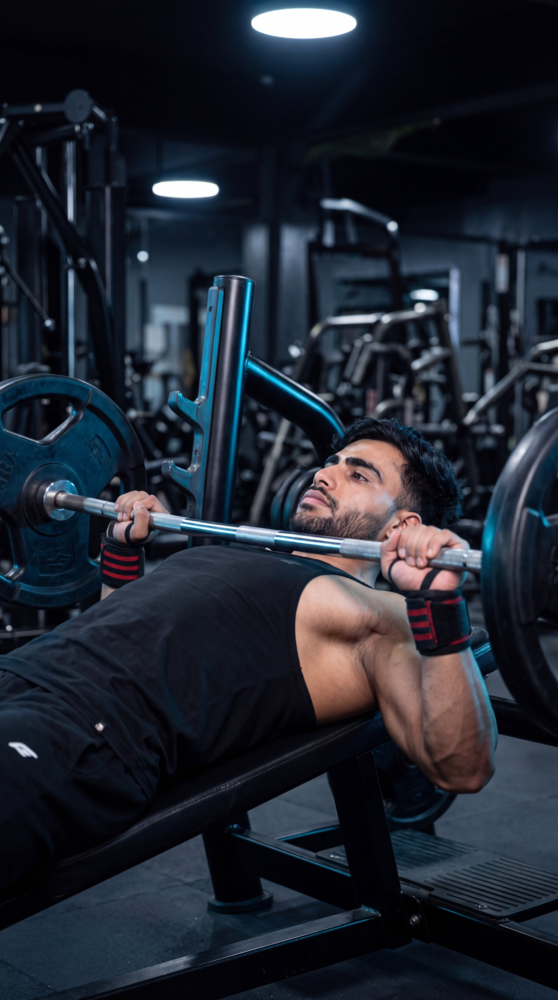
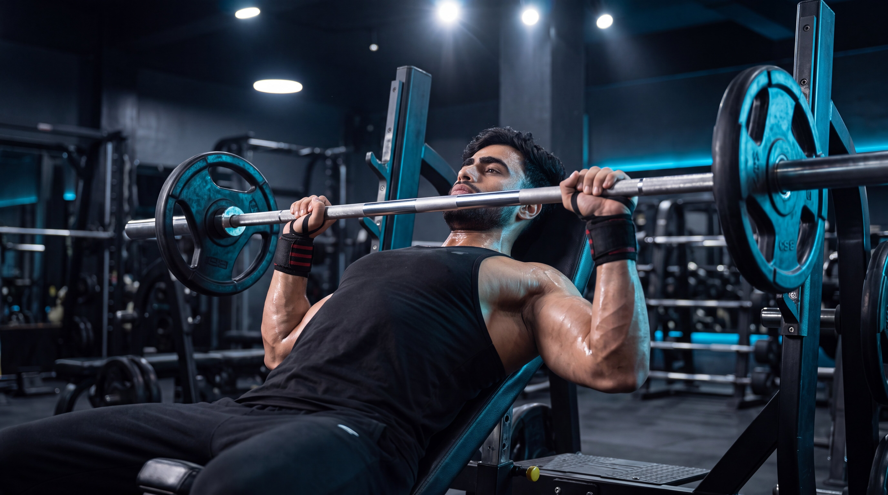
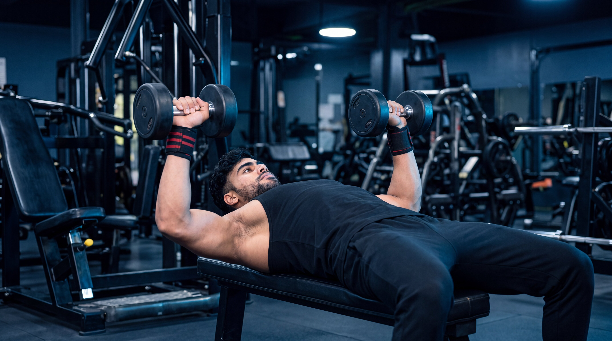
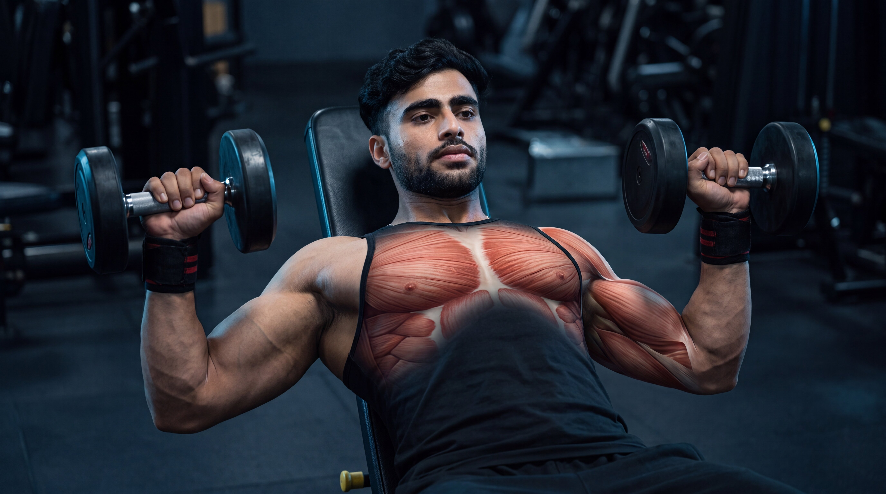

Beginner
Beginner
Bench Press
Build chest strength and pressing power with one of the most effective upper-body compound exercises.
View ExerciseExplore step-by-step chest exercise guides designed to help you master proper form, understand muscle activation, avoid common mistakes, and build strength with confidence.

Explore our chest exercise library and learn proper technique, muscle activation, common mistakes, and practical coaching tips for every movement.
Beginner
Build chest strength and pressing power with one of the most effective upper-body compound exercises.
View Exercise
IntermediateEmphasize the upper chest while building powerful pressing strength with an inclined bench angle.
View Exercise
BeginnerTrain each side independently while developing chest strength, stability, and a natural range of motion.
View Exercise Intermediate
Intermediate
Develop upper-chest strength and control through independent dumbbell pressing on an incline bench.
View Exercise Intermediate
Intermediate
Maintain continuous tension on the chest through a controlled fly movement using adjustable cables.
View Exercise Beginner
Beginner
Isolate the chest with a stable machine-guided movement designed for controlled muscle contraction.
View ExerciseBuild chest, shoulder, triceps, and core strength using one of the most effective bodyweight exercises.
View Exercise Advanced
Advanced
Build powerful lower-chest and pressing strength using a controlled forward-leaning dip technique.
View ExerciseDifferent chest exercises serve different purposes. Choose your movement based on whether you want to build pressing strength, develop your upper chest, isolate the chest with greater control, or improve bodyweight strength.
Focus on compound pressing movements that allow progressive overload and train the chest, shoulders, and triceps together.
Use incline pressing movements to place greater emphasis on the upper portion of the chest while developing balanced pressing strength.
Choose fly movements when you want controlled chest isolation and continuous muscular tension without relying on heavy pressing loads.
Develop practical upper-body strength using your own bodyweight while training the chest, shoulders, triceps, and core together.
Go beyond the surface. Explore cinematic anatomy videos that reveal how your muscles, joints, and movement mechanics work during every repetition.
Watch what happens beneath the skin as the chest, shoulders, and triceps coordinate through every phase of the bench press.
See how the primary pressing muscles contribute throughout the repetition.
Understand how the shoulders, elbows, and chest work together under load.
Connect anatomy with better exercise execution and controlled movement.
Select an exercise to explore its cinematic under-the-skin breakdown.

HindiBuilding a stronger chest is not only about lifting heavier weights. Exercise selection, pressing angles, controlled movement, and consistent progression all shape long-term results.
Master the fundamentals first. Then make every repetition more purposeful.
Flat and incline pressing movements challenge the chest from different positions. Build your training around movements that match your goals and allow controlled, repeatable technique.
Use a comfortable range of motion that you can control with stable positioning. Avoid forcing depth or sacrificing technique simply to move more weight.
Progress does not always mean adding more weight. More controlled repetitions, improved technique, additional range, or gradual load increases can all represent meaningful progress.
Compound presses build pressing strength and train several upper-body muscles together, while fly variations provide a different movement pattern for the chest. Use both strategically.
Get clear, practical answers to common questions about chest exercises, training frequency, technique, and exercise selection.
For many people, around two to four chest exercises in a workout can be enough, depending on training experience, weekly frequency, exercise selection, and total training volume. Focus on quality sets and purposeful movements rather than adding exercises simply for the sake of doing more.
Many people train the chest one to three times per week depending on their program, experience, recovery, and total weekly volume. Training twice per week is a common approach because it allows chest work to be distributed across multiple sessions rather than concentrated into one large workout.
Both can be useful. Barbells provide a stable way to develop pressing strength, while dumbbells allow each arm to work independently and may offer a comfortable range of motion for some lifters. Beginners should choose movements they can perform safely and consistently with controlled technique.
The shoulders naturally contribute to pressing, but excessive shoulder involvement may be influenced by factors such as grip width, elbow position, bench setup, bar path, exercise load, or individual anatomy. Review your technique, use a controlled load, and avoid forcing a setup that feels uncomfortable.
Not necessarily in every workout, but using different pressing angles across your training program can provide useful variety. Flat presses are strong general chest-building movements, while incline presses place relatively greater emphasis on the upper portion of the chest.
Chest fly variations are not mandatory, but they can complement pressing exercises by training the chest through a different movement pattern. Cable, dumbbell, and machine fly variations can all be useful depending on your goals, equipment, comfort, and overall program design.
Training needs vary between individuals. Choose exercises and training volume that match your experience, goals, recovery, and comfort.
Strength is built through balanced training. Explore more muscle groups, discover new exercises, and keep building your knowledge one movement at a time.